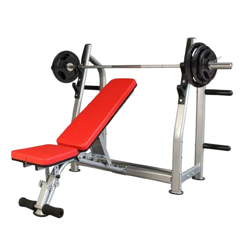
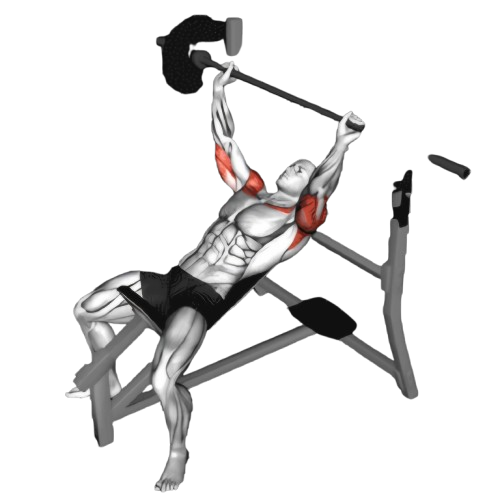
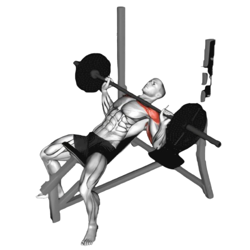

인클라인 벤치프레스

- 인클라인 벤치를 약 30도에서 45도 정도로 기울여 설정한다.
- 바벨을 가슴 위쪽에 올 수 있도록, 손을 어깨 너비보다 약간 넓게 벌려서 잡는다.
- 바벨을 들어서 팔을 펴고, 바벨을 가슴 위쪽으로 위치시킨다. 바벨이 명치와 어깨 사이에 오도록 해야 한다.
- 이때 호흡은 뱉는다.
- 천천히 바벨을 가슴 위쪽으로 내린다. 팔꿈치를 몸통 옆으로 자연스럽게 내리며, 바벨이 가슴 윗부분에 닿도록 한다.
- 바벨이 가슴에 살짝 닿으면, 숨을 내쉬면서 팔을 밀어 올려 시작 위치로 돌아온다.
- 이때 호흡은 마신다.

주의사항
- 인클라인 벤치프레스는 어깨가 더 많이 사용되므로, 어깨가 과도하게 움직이지 않도록 주의한다.
- 손목이 꺾이지 않도록 주의하고, 바벨을 손바닥 중심에 잡는다. 손목이 뒤로 젖혀지면 부상의 위험이 있다.li>
- 벤치의 기울기를 너무 높게 설정하면 어깨에 무리가 간다.
- 지나치게 무거운 중량은 잘못된 자세를 유발할 수 있어 부상의 원인이 된다.
운동부위 및 효과
- 상부 대흉근, 삼두근, 삼각근 전면부, 코어근육
- 가슴의 윗부분을 발달시키는 데 효과적이다. 가슴 라인을 탄탄하고 볼륨 있게 만들어준다.